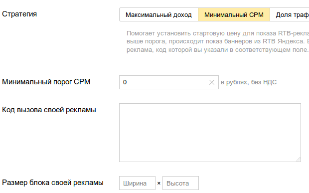

Средний показатель равен 0,9$ или примерно 54 рубля. Это информация для рекламной сети Яндекс (РСЯ). Данный показатель справедлив для системы показа рекламы RTB.
На основе этого показателя можно настроить стратегию "Минимальный CPM". Зачем она нужна? Затем, что бы показывать только дорогую рекламу Яндекса (показатель выше среднего), а вместо дешевой рекламы показывать рекламу другого рекламного брокера.
Вот как выглядит окно настройки режима "Минимальный CPM":

Для среднего показателя в 54 рубля, имеет смысл установить значение "Минимальный порог CPM" в 40-45 рублей за 1000 показов. В поле "Код вызова своей рекламы" вставляется код альтернативного рекламного блока, который будет показываться, если реклама РСЯ будет стоить ниже указанной стоимости. Например, это может быть код рекламной сети Google Adsence.
Общее использование Adsence и РСЯ может увеличить доход. Можно немного пренебречь заработком в рекламной сети Яндекса (40-45 вместо 54, см. выше) и, возможно, это увеличит общий доход сайта. Но всегда такую настройку нужно проверять на практике.
Внимание! Если сторонние системы не используются, то выбирать стратегию "Минимальный CPM" не стоит. Это просто отсечет часть дохода, который мог бы быть получен на менее дорогой рекламе.
Кстати говоря, бытует миф о том, что стратегия РСЯ "Максимальный доход" обеспечивает далеко не максимальный доход. В названии "Максимальный доход" не говорится о том, максимальный доход для кого имеется в виду. Многие сходятся во мнении, что имеется в виду макимальный доход Яндекса, а не вебмастера. Так ли это - история, покрытая тайной. Это можно определить только самостоятельно, на собственном опыте. А сам Яндекс этого вам никогда не расскажет.